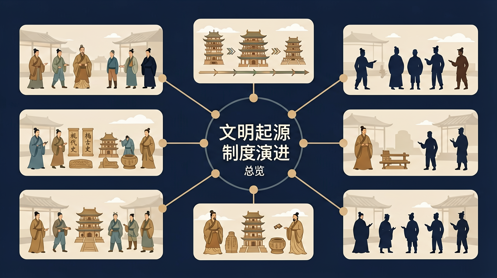

中国古代史：文明起源与制度演进总览
建立中国古代史主线框架：文明起源、早期国家、先秦变局、秦汉统一与制度演进。
证据链因果解释迁移应用

课标导入
本课对应《普通高中历史课程标准（2017年版2020年修订）》中国古代史领域，要求学生在时空中定位重大变革，并用证据解释“制度—经济—文化”之间的互动关系。学习时先建立时间轴，再逐段阅读材料，避免把故事复述当成历史解释。
导入任务：在笔记本上写出“文明起源—早期国家—先秦变局—秦汉统一”四段关键词，并各配一条可核验的史料类型（考古、文献、图像）。错因提示：若只记朝代名而无因果链，材料题容易丢分，需要回到证据本身重新组织解释。
问题锚点
学习目标
- 搭建“文明起源—早期国家—先秦变局—秦汉统一”的四段时序框架
- 用制度、疆域和经济三类证据解释“大一统国家为何能够长期维持”
- 独立完成 120-150 字材料分析段，做到“证据-机制-评价”闭环
🗺️ 中国古代史疆域与都城演进
点击时代按钮切换疆域版图；悬停高亮边界；点击红色城市标记查看详情。
前测
中国古代史学习中，最优先建立的能力是？
核心概念结构
把本课知识拆成三层：先找可核验史料，再写因果机制，最后完成迁移表达。避免只背结论、不引证据。

历史分析流程
答题时按“定位→证据→机制→评价”四步组织语言；每步至少对应一条材料信息，防止空泛概括。

互动一：朝代时序排序
下面的朝代被打乱了。请按从早到晚的顺序依次点击，系统会标号；点错可“重置”。
互动二：中央集权强度模拟器
拖动滑块，模拟“中央集权程度”从分封制到极端郡县集权的变化，观察三项治理指标如何此消彼长——这正是制度演进的核心权衡。
互动三：史料证据分类器
材料题高分关键是“证据分类”。判断每条材料主要属于哪一类，点击对应标签后“批改”。
巩固练习（5 题 · 含解析）
选择后立即显示解析。完成后可在底部查看正确率。
后测
解释“秦汉统一意义”时，应优先组织哪类证据？
延伸：若给出“徙民实边”材料，请判断它在统一国家治理中的功能定位（军事、财政、行政三选二）。
小结
- 从文明起源到帝国统一，核心变量是组织能力与治理半径同步扩大。
- 制度选择（分封/郡县）与经济网络（交通/赋税）共同决定国家稳定性。
- 高分答案不靠堆名词，而靠“证据可核验、机制可解释、评价有限度”。
课后 5 分钟复盘：用一张表写“今天最强证据、最弱证据、可改进解释”，下节课开头进行同伴互评。
微课视频
视频内容：课程主线、证据框架与迁移任务。
语音导学
🎨 AI 多模态互动
复制提示词到 AI 学伴，生成「中国古代史总览」的时间轴或事件提纲；也可以上传你手绘的示意图，请 AI 学伴点评。
复制后可粘贴到 AI 学伴继续对话。